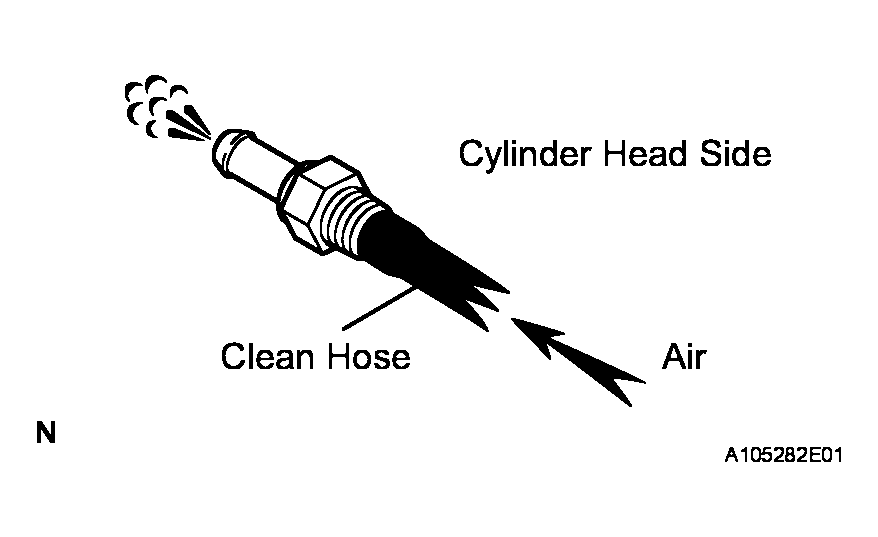

Ventilation Valve: Inspection
- INSPECT VENTILATION VALVE
- Install a clean hose to the ventilation valve.
- Check the ventilation valve operation.
- Blow air into the cylinder head side, and check that air passes through easily.

Courtesy of © TOYOTA, LICENSE AGREEMENT TMS1002CAUTION: Do not suck air through the valve. Petroleum substances inside the valve are hazardous to your health. - Blow air into the intake manifold side, and check that air passes through with difficulty.
If the result is not as specified, replace the ventilation valve.
- Blow air into the cylinder head side, and check that air passes through easily.
- Remove the clean hose from the ventilation valve.